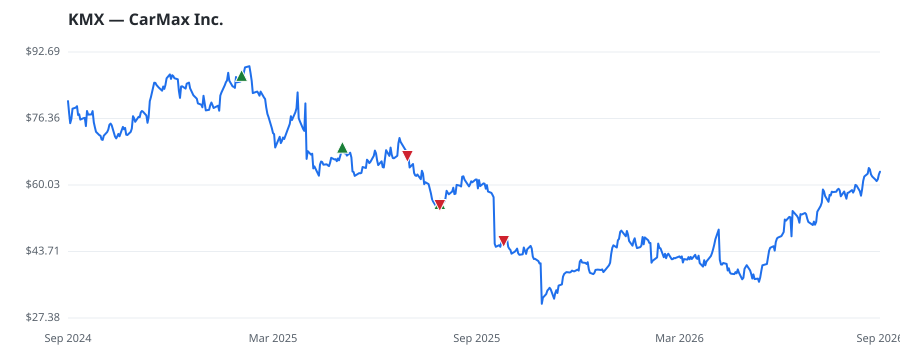

bullish · bearish · n/a — dots: price>SMA10 · SMA10>SMA50 · SMA50>SMA200 · up>down volume (20d)
Retailing · mid cap
Members who bought KMX earned a dollar-weighted -15.2% from their disclosure dates, versus +13.4% for the S&P 500 over the same holding windows (-28.6% alpha).

▲ green = a disclosed purchase · ▼ red = a disclosed sale (plotted on disclosure date)
CarMax sells, finances, and services used and new cars through a chain of over about 260 retail stores. It was formed in 1993 as a unit of Circuit City and spun off into an independent company in late 2002. Used-vehicle sales were 80% of fiscal 2026 revenue and wholesale about 17%, with the remaining portion composed of extended service plans and repair. In fiscal 2026, the company retailed and wholesaled 780,684 and 538,203 used vehicles, respectively. CarMax is the largest used-vehicle retailer in the US, but still estimates that it had only about 3.6% US market share of vehicles zero to 10 RETAIL-AUTO DEALERS & GASOLINE STATIONS · website
| Revenue | $25.9B | Net income | $247.3M |
|---|---|---|---|
| Operating income | $383.4M | Diluted EPS | $1.68 |
| Assets | $26.4B | Equity | $5.9B |
| Member | Chamber | Out-performer | Disclosed buys $ | Return on buys |
|---|---|---|---|---|
| Rohit Khanna | house | — | $16K | -9.3% |
| Gilbert Cisneros | house | — | $8K | -27.0% |
Disclosed $ figures are bracket midpoints — filings report ranges (e.g. $1,001–$15,000), not exact amounts.
🛒 Newly buying: Slate Path Capital LP (+141%, 1.3% of book)
| Fund | Fund alpha vs SPY | Position | % of book |
|---|---|---|---|
| Slate Path Capital LP | +141% | $97M | 1.3% |
| Hollow Brook Wealth Management LLC | +6% | $0M | 0.1% |
Hedge data: SEC EDGAR 13F · ranked funds beat SPY in >50% of their quarters · fund alpha = mirror-portfolio return minus SPY.